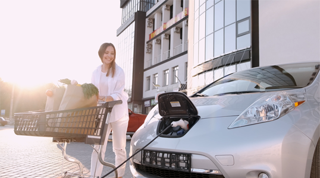

Answers to common questions about finding chargers, starting sessions and charging your EV with Rimone.
Open the questions below for guidance on charging, connector support and common troubleshooting.
You can find Rimone EV chargers on the RimoneCharge mobile app and through Google Maps.
Rimone offers both AC and DC fast charging depending on the location and user requirement. AC charging is suitable for homes, residential apartments, societies and hotels, while DC fast charging is used at locations such as highways where drivers usually have a shorter stop.
Rimone EV charging stations are equipped with standard connectors that support almost every EV in the Indian market. Users can use Type 2 connectors with AC chargers and CCS2 or CHAdeMO connectors with DC fast chargers.
Once charging starts, you can view the session status on the charging screen in the mobile app. From there, press the stop button to end the charging session. The connector will unlock once the session has ended.
Yes. Rimone offers charger reservation on supported stations so a charger can be ready for you when you arrive.
It depends on the charger. If the charger has two sockets, two EVs can be charged simultaneously. This feature is mostly available with DC fast chargers in the Rimone network, while Level 2 chargers usually have a single socket for one EV at a time.
Rimone Customer Care is available to help. Contact us at +91-7696072280.
First, make sure the charging session has stopped. If the connector is still not disconnected, try these steps:
If the connector still does not release, contact Rimone Customer Care at +91-7696072280.
If power is interrupted while your EV is charging, the current charging session will end and you will be billed only for the energy consumed before charging stopped. You can restart the session once power is restored.
Charging speed can depend on several factors, including:
If your query is not solved here, Rimone Customer Care can help you with charger, app and session-related questions.
